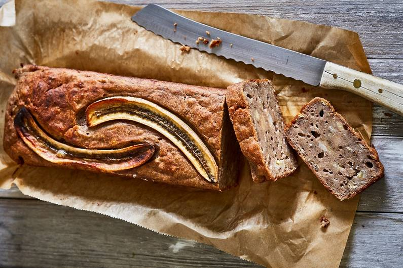

Bananenbrot

Beschreibung
Zuckerfrei. Damit Fit werden auch lecker ist.Du liebst das Bananenbrot vegan, mit Zimt, ohne raffinierten Zucker, mit Mandelmus und Dinkelmehl?
Dann greife bitte zu.
Das vegane Bananenbrot ist supersaftig, schnell zubereitet und brauch nur ca. 30 Minuten im Ofen.
Zutaten
- 2 reife Bananen
- 30 ml neutrales Öl
- 1 TL Zimt und Salz
- 1 EL Apfelmark
- 1 EL Dattelsirup
- 0,5 EL Mandelmus
- 100 g Dinkelmehl (Type 630)
- 1 TL Backpulver
- 40 ml Haferdrink
- Banane
- Für den Teig einen Kastenform (ca. 25 cm lang) fetten und mit Mehl ausstäuben.
Bachofen vorheizen. Bananen schälen, in Stücke schnieden und in einer Rührschüssel mit einer Gabel fein zermusen.
- Mit Öl, Zimt, 1 Prise Salz, Apfelmark, Dattelsirup und Mandelmus kurz mit den Schneebesen des Rührgerätes verrühren.
Mehl und Backpulver mischen. Abwechselnd mit Haferdrink unter die Bananenmasse rühren. Teig gleichmäßig in der Form verteilen und glatt streichen.
- Für das Topping Banane schälen, längs haöbieren und mit der Schnittseite nach oben auf der Kuchenoberfläsche legen.
Kuchen im heißen Ofen 30-35 Minuten backen. Nach ca. 25 Minuten eventuell mit Alufolie abdekcen. Bananenbrot aus dem Ofen nehmen, auf einem Kuchengitter abkühlen lassen und vorsichtig aus der From stürzen.
HOME